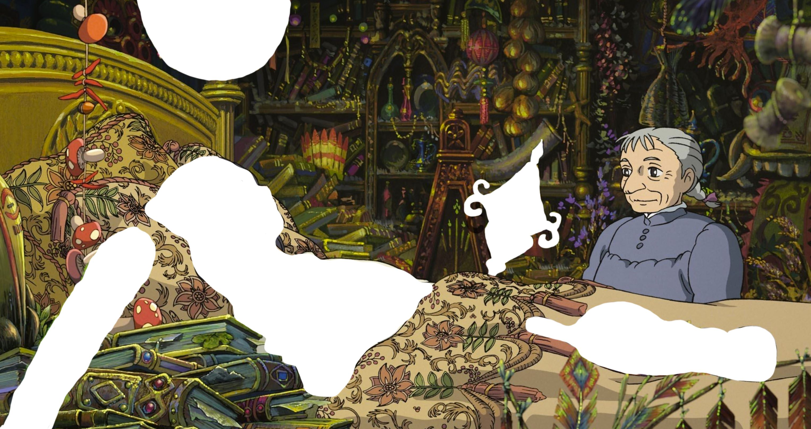

In the movie, Howl has a magic door knob that can teleport the user to a different the place depending on the selected color. I used this idea for my homepage to "teleport" the user to Howl's room. The doorknob was animated using CSS, and I used Javascript to direct the user to Howl's room after the animation ended.
Once in Howl's room, the user can click on different objects to play their audio. I created "buttons" in Illustrator to mask over each object. In the final version, the buttons are hidden. Once clicked, I used Javascript to call the associated audio.